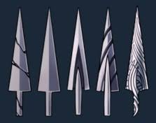
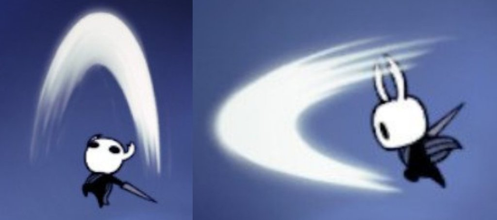
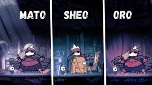
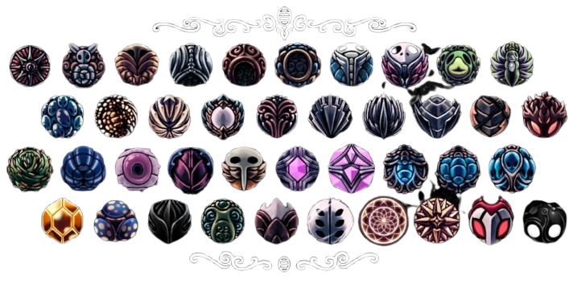

Combate
O ferrão:
É a principal ferramenta de ataque do jogo, ele pode ser utilizado de 2 formas diferentes, todas com suas respectivas funções. Além disso, atacar com o ferrão de qualquer forma irá gerar alma, que pode ser utilizado para fazer diversas funções.
Ataque básico
Esse é o pão e a manteiga de hollow knight, é o primeiro ataque que o jogador desbloqueia, e é utilizado durante todo o jogo. O cavaleiro usa seu ferrão para cortar o que estiver em sua frente, o dano não é muito bom, mas o ataque básico deve ser utilizado primordialmente para gerar alma, para que assim as outras capacidades do cavaleiro possam dar a maioria do dano.
Arte do ferrão:
As artes de ferrão são habilidades obtidas pelo cavaleiro por meio dos mestres do ferrão, que podem o ensinar 3 ataques poderosos, melhorando assim a versatilidade do ferrão. Para serem realizados, o cavaleiro precisa segurar o botão de atacar, para gerar uma carga que pode ser utilizada para realizar os ataques, são eles o grande corte, o corte impulsionado e o corte ciclone. O grande corte é uma versão melhorada do corte padrão, ao ser ativado, o cavaleiro usa seu ferrão para realizar um ataque maior e mais forte a sua frente. O corte impulsionado é um ataque que é realizado em conjunto com a esquiva, uma habilidade que pode ser obtida. Ao ser ativada, o cavaleiro usa a sua esquiva e em seguida corta uma grande área a sua frente. O corte ciclone é um ataque de controle em área, ao ser utilizado, o cavaleiro gira com seu ferrão, cortando seus flancos.
Alma
A alma é um recurso usado para duas coisas: o foco e magias.
- O foco usa uma pequena quantidade de alma para curar o jogador, imobilizando-o durante sua duração.
- As magias são utilizadas para causar dano massivo. Elas podem ser melhoradas, aumentando o seu dano total. As magias são: espírito vingativo, espectros uivantes e mergulho desolador. O espírito vingativo lança uma massa de almas para frente, causando dano aos inimigos que forem atingidos. Os espectros uivantes gera uma explosão de alma acima do cavaleiro, que causa dano a todos os inimigos que forem atingidos. O mergulho desolador faz com que o cavaleiro pule e golpeie o chão, causando dano a todos os inimigos que estiverem em sua área de efeito.
Movimento:
As principais mecânicas do movimento que afetam o combate são o andar, a esquiva e o pulo duplo. Andar é o movimento básico do jogo, ele pode ser utilizado para se mover pelo chão. A esquiva é um impulso unilateral que pode ser utilizado tanto no ar quanto no chão, ela pode ser utilizada para mover o cavaleiro rapidamente, tornado-o um alvo mais difícil de ser acertado. O pulo duplo pode ser utilizado para alcançar alturas que não podem ser alcançadas com o pulo normal, ou para realizar manobras defensivas enquanto está no ar.
Amuletos:
Os amuletos são itens que mudam a forma como o jogo funciona, suas funções podem variar de caso a caso, como mudando status do cavaleiro ou mudando como alguma mecânica funciona. Eles podem ser encontrados por toda Hollownest, com muitos deles sendo escondidos ou protegidos por inimigos poderosos. Os amuletos necessitam de "encaixes" para funcionar, cada amuleto possue um requisito de encaixes para funcionar, e encaixes podem ser encontrados espalhados pelo mapa. Caso a quantidade de encaixes do cavaleiro não seja suficiente para equipar os amuletos desejados, ele pode utilizar uma sobrecarga de amuletos, que permite equipar além das suas capacidades, mas cada encaixe além das suas capacidades aumenta o dano recebido.
